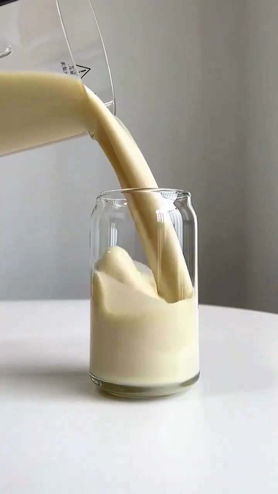
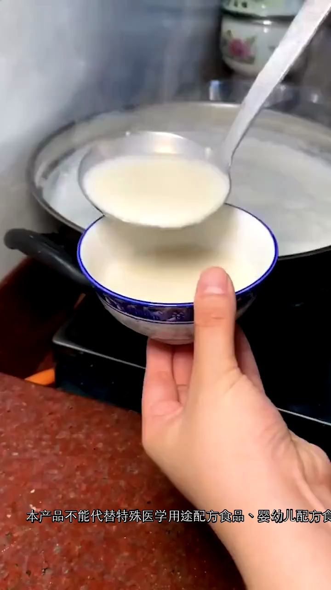

核心指标均值与素材气泡矩阵
41 条高消耗（均为高效）素材视频的数据分布特征（气泡大小=平均播放时长）
各消耗区间核心数据对比
素材指标矩阵 (横轴 CTR, 纵轴 CVR)
素材生产方式与 AIGC 应用效果洞察
不同生产方式核心数据对比
主视觉 × 整体双维度| 生产类型 | 消耗 (占比) | 素材数 | CTR | CVR | ROI |
|---|---|---|---|---|---|
| 纯人工 | 560.0万 (66.4%) | 18,255 | 4.20% | 8.50% | 1.699 |
| 纯AIGC | 197.2万 (23.4%) | 19,067 | 2.31% | 6.87% | 1.677 |
| 混合AIGC | 86.6万 (10.3%) | 3,074 | 3.25% | 9.82% | 1.859 |
混合AIGC素材（人工主视觉 + AIGC文案/组件）效率达到金字塔尖！其 CVR高达9.82%，C-ROI高达1.859，比纯人工高 9.4%，比纯AIGC高 10.9%。
AIGC 消耗占比随爆量阶段演进
6/22 冷启动期 (AIGC占绝对主导)
总消耗 15.7万 • AIGC消耗 9.08万 • 占比高达 57.7%
6/24 首次放量 (AIGC协助规模化)
总消耗 41.8万 • AIGC消耗 16.28万 • 占比 38.9%
6/29 放量高峰 (人工视觉全面接管)
总消耗 79.9万 • AIGC消耗 10.34万 • 占比回落至 12.9%
7/02~7/03 峰值期 (AIGC二次补量)
总消耗 167.0万 • AIGC消耗 48.08万 • 占比回升至 28.8%
AIGC 内部能力效能拆解
主视觉
人工视觉拉高曝光
人工主视觉 CTR 4.19%
组件/文案
AIGC文案暴增CVR
人工视觉+AIGC文案 ROI 1.856
AIGC 爆量应用四大核心洞察
快速冷启的“绝对功臣”：AIGC素材在投放首日提供近 58% 的素材供给，快速填充素材池，协助智投系统以极低成本和闪电速度平稳度过冷启动期。
起量发动机仍看人工视觉：人工素材在中后期消耗占比升至 87%，其点击率与转化率优势显著。大曝光和撑起基本盘的爆量引擎仍看优质的人工实拍主视觉。
混合AIGC是最低成本提效器：人工主视觉（高CTR） + AIGC文案/组件（高CVR）四象限效率最优（ROI 1.856/1.859），文案AI化是提效性价比最高的杠杆。
规避低质盲目堆量陷阱：必须警惕预设模板的量多效弱（1.1万个模板素材几乎不起量，CTR 0.67%）。应当提质减量，聚焦于高质量数字人和精细化文案的应用。
重点爆款素材多维创意卡片墙
黄金三秒深度分析
【开场】画面中一位中年女性正在接受采访，字幕提示“三伏天不要多吃”，引发用户对夏季饮食禁忌的好奇。
【承接】字幕进一步明确“这4种水果”，通过具体数字和品类预告，强化了信息的重要性，吸引用户继续观看以了解具体是哪4种水果。
素材骨架结构
爆款卖点提炼
【季节养生】针对三伏天这一特定时节，提供精准的饮食禁忌，帮助用户科学养生。
【专家解读】由专业人士出镜讲解，提升健康科普内容的权威性和可信度。
【避雷指南】明确指出不宜多吃的4种水果，帮助用户规避饮食误区，保护身体健康。
【健康管理】通过提供实用健康知识，引导用户关注日常饮食，提升自我健康管理能力。

黄金三秒深度分析
【开场】第一帧画面展示了用大勺从锅中舀出浓稠液体到碗里的场景，营造出传统、新鲜、热腾腾的制作感，吸引用户对食物的原始魅力和制作过程产生兴趣。
【承接】第3秒画面迅速切换到将同样浓郁丝滑的液体从容器中倒入现代透明玻璃杯的场景，强调了产品细腻的质地和诱人的视觉效果，同时展现了产品在现代生活中的便捷享用方式，激发用户对品尝的欲望。
素材骨架结构
爆款卖点提炼
【传统制作】视频开场展示了类似手工或传统方式从大锅中舀取，暗示产品遵循传统工艺，味道纯正。
【质地浓郁】无论是从锅中舀出还是倒入杯中，液体都呈现出浓稠、丝滑的质感，视觉上强调了产品的醇厚口感。
【营养健康】作为豆浆类饮品，天然具有高蛋白、植物基等健康属性，符合现代人对健康饮食的追求。
【多场景享用】从传统碗到现代玻璃杯的切换，展现了产品既可作为传统早餐，也可作为时尚健康饮品，适应不同消费场景。

黄金三秒深度分析
【开场】画面中人物表情认真，顶部展示产品名称“莲子百合山药粉”，下方黄色区域留白，引发观众好奇心。
【承接】黄色区域文字揭示“有4种零食一定要多吃”，直接给出健康饮食建议，与产品健康属性呼应，吸引目标用户继续观看以获取具体信息。
素材骨架结构
爆款卖点提炼
【健康养生】产品成分天然，符合健康饮食趋势，助力身体调理。
【方便快捷】粉状冲调，食用方便，节省时间，适合快节奏生活。
【营养丰富】莲子、百合、山药均为传统滋补食材，提供多种营养元素。
【专家推荐】视频中人物形象专业，通过健康科普增加产品可信度。


黄金三秒深度分析
【开场】画面展示了从大锅中盛出浓稠饮品至碗中，强调手工制作的温暖与新鲜感，引发用户对传统美味的兴趣。
【承接】画面迅速切换至将饮品倒入透明玻璃杯中，展现产品细腻顺滑的质地和诱人的色泽，突出其即饮的便捷性与现代感，进一步吸引用户关注产品品质。
素材骨架结构
爆款卖点提炼
【浓郁醇厚】画面中液体质地浓稠，色泽诱人，展现产品料足味浓的特点。
【丝滑细腻】从倒出到入杯，液体流动顺畅无颗粒感，暗示产品口感极致丝滑。
【健康饮品】作为植物蛋白饮品，通常富含营养，适合追求健康生活的人群。
【便捷享用】无论是传统盛装还是现代倒杯，都体现了产品易于准备和享用的特点。


黄金三秒深度分析
【开场】画面中一位中年女性在车内，字幕提示“三伏天不要多吃这4种水果”，直接抛出健康饮食禁忌，引发用户好奇心。
【承接】女性继续讲解并伴有手势，字幕内容不变，强化了健康科普的专业性和权威感，暗示即将揭示具体内容。
素材骨架结构
爆款卖点提炼
【时令养生】针对三伏天特殊气候，提供符合季节特点的养生方案。
【专家背书】通过专业人士讲解，提升产品或方法的科学性和可信度。
【饮食指导】提供具体饮食建议，帮助用户规避健康风险。
【健康解决方案】暗示产品能有效解决夏季饮食不当带来的健康问题。

黄金三秒深度分析
【开场】通过“很遗憾的告诉大家”引入，直接抛出“莲子百合山药药粉库存告急”和“福利马上就要结束了”的重磅信息，制造稀缺感和紧迫性，吸引用户关注。
【承接】画面中人物的口语化表达“哎结束了”、“这个走完咱就结束了”进一步强化了福利即将终止、库存即将售罄的紧迫感和真实性，促使用户继续观看以了解详情或采取行动。
素材骨架结构
爆款卖点提炼
【健康滋补】莲子百合山药粉作为传统滋补品，主打养生保健功效。
【天然食材】产品名称直接体现由莲子、百合、山药等天然食材制成。
【源头直供】视频背景为工厂实拍，暗示产品从源头工厂直接发货，品质有保障。
【限时优惠】字幕明确提示“福利马上就要结束了”，强调当前购买可享优惠。


黄金三秒深度分析
【开场】画面中，热气腾腾的白色液体被盛入碗中，营造出温暖、新鲜、手工制作的诱人氛围，直接刺激用户的味蕾和好奇心。
【承接】画面一转，金黄色的浓稠饮品从容器中倾泻而下，注入透明玻璃杯，展现了产品丝滑的质地和诱人的色泽，强调其美味与即饮的便捷性。
素材骨架结构
爆款卖点提炼
【新鲜制作】画面中热气腾腾的液体，暗示产品新鲜出炉，口感最佳。
【丝滑浓郁】从容器中倾泻而出的液体，展现其细腻顺滑、质地浓稠的特点。
【健康营养】作为植物蛋白饮品，通常富含蛋白质，提供健康能量。
【方便快捷】无论是自制还是即饮，都满足现代人对便捷生活的需求。


黄金三秒深度分析
【开场】视频以“很遗憾的告诉大家”和“莲子百合山药药粉库存告急”、“福利马上就要结束了”的醒目字幕，结合主播略带无奈又亲切的笑容，迅速营造出产品稀缺和促销即将截止的紧迫感，吸引用户关注。
【承接】第3秒，主播通过口播“哎结束了”、“这个走完咱就结束了”，进一步强化了库存告急和福利即将终止的真实性与不可逆性，配合手势，直接促使用户产生“再不买就没了”的心理，有效留住用户。
素材骨架结构
爆款卖点提炼
【天然食材】精选莲子、百合、山药等天然道地食材，源头把控，品质保证。
【滋补养生】传统配方，温和滋补，有助于调理身体，改善体质，适合日常养生。
【便捷冲饮】粉末状设计，冲调方便快捷，随时随地享受健康，节省时间。
【限时福利】库存告急，福利活动即将截止，抓住最后机会，享受超值优惠。
同消耗区间更多爆款素材一览
其余 33 条未进行深度解析的优秀高效爆款素材链接